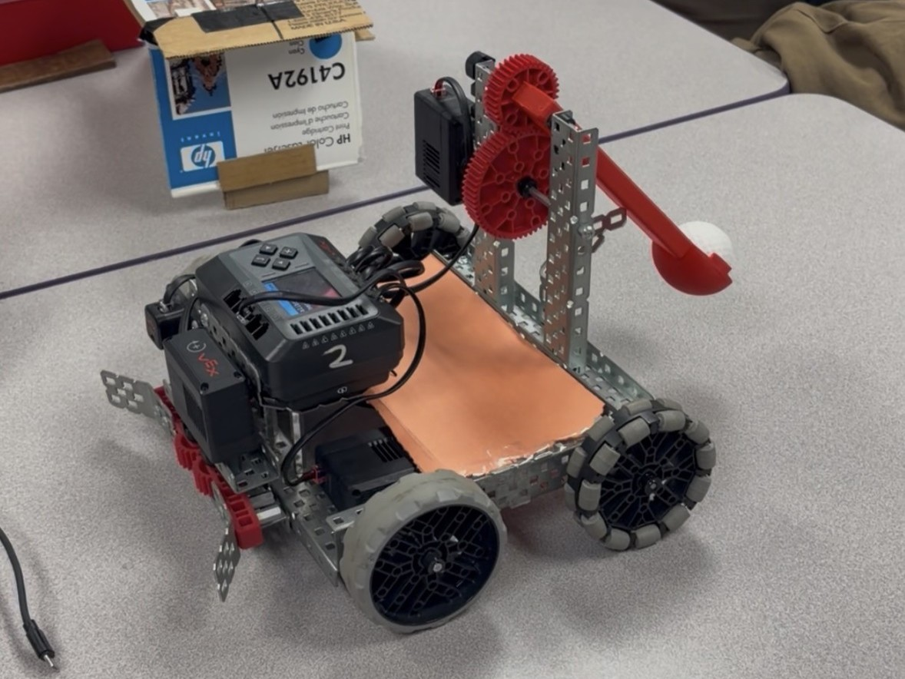
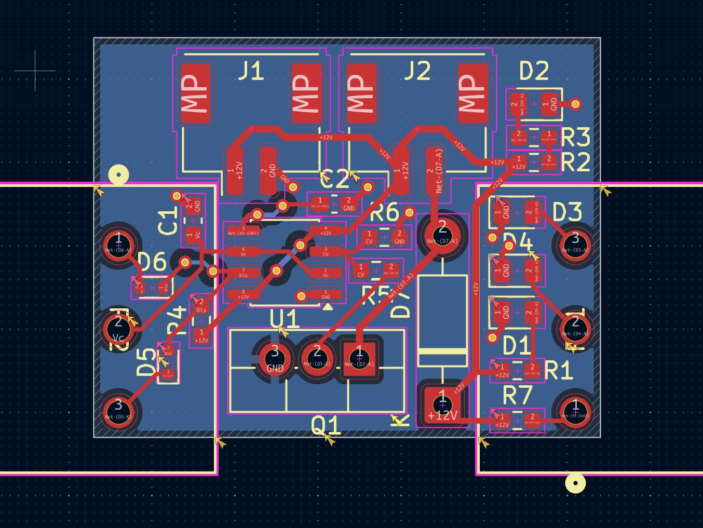
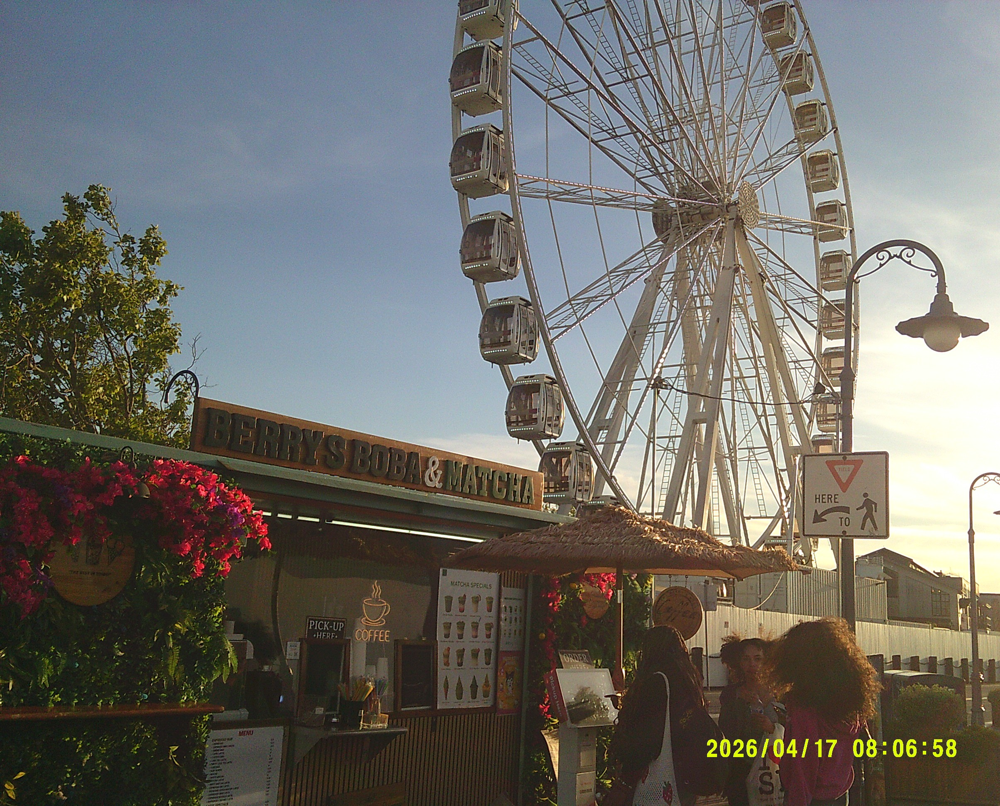
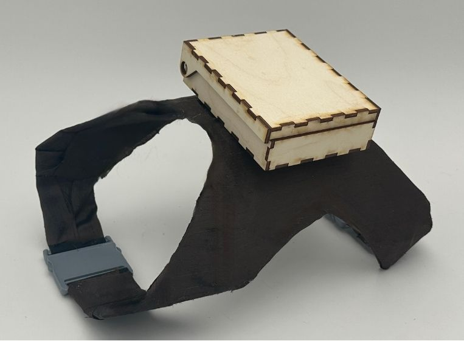

Autonomous Robot
Developed an autonomous robot capable of navigating obstacles using sensors. Implemented algorithms for pathfinding and obstacle avoidance. Won first place overall at the Imperial Valley Robotics Competition!
Here are some of the projects I've worked on this past year!

Developed an autonomous robot capable of navigating obstacles using sensors. Implemented algorithms for pathfinding and obstacle avoidance. Won first place overall at the Imperial Valley Robotics Competition!

Designed and manufactured a custom PCB for a microcontroller-based project. Implemented signal integrity and power distribution strategies.Successfully tested and validated the design in a real-world application.

Created a personal photography portfolio showcasing landscapes and urban scenes. Utilized various techniques to enhance visual storytelling and capture unique perspectives.

Developed a smart pet harness equipped with GPS tracking and health monitoring features. Designed the hardware and software components to ensure reliable performance and user-friendly operation. Deployed a mobile app for users to monitor their pets' location and health metrics.